{kind=link}
{kind=link}
{kind=link}
{kind=link}
{kind=link}


Airfield Accessories by Matador Models
1/48 Hanomag SS-100 Heavy Tractor
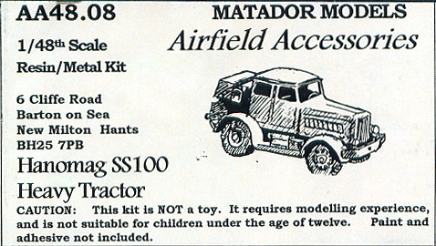
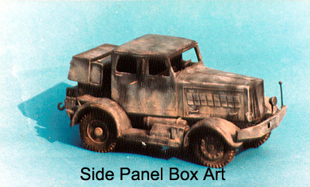
Kit #AA48.08 MSRP $53.22
Images and text Copyright � 2004 by Matt Swan
Developmental Background
Originally manufactured in 1936 as the SP-100 heavy agriculture tractor, it was quickly commandeered for use by the military. Modified and produced in both two and four-door versions with a new designation of SS-100, this Hanomag vehicle became one of the most widely used heavy tractors in German Military service. It could accommodate up to five passengers and a driver and sported a variety of supplemental equipment attached to the rear frame. Its civilian designation was �Gigant�, the Luftwaffe referred to it as a heavy road tractor, in the United States it would fit more into the category of Semi-Tractor Truck.
Best known for its use with the V-2 missile towing the �Vidalwagen� which transported the V2 rocket from the railhead to the launch units� preparation facility it was also used for towing aircraft, bombs, gasoline trailers and B-Stoff trailers for the Me-163 Komet program. Its use was not restricted to the Luftwaffe, the German army used it and a version had been produced for use by the French Army. Even after the war production continued, Hanomag tractors were popular for use as fairground equipment transports well into the 1960s.
The Kit
For some time now I have been looking at this kit over at Scale Link�s website for my dioramas. I just could not take it any longer, it had to go on my Christmas Wish List and my beloved wife made sure I got one � bless her heart.
Upon opening the small (and heavy) cardboard box I was greeted with two small bags of white metal parts and a collection of resin castings. The resin pieces cover the main body parts, chassis and seats. The overall level of detail is very good. There is quite a bit of flash on the parts, especially the smaller pieces and there are several large air bubbles in the top surface of the chassis and the interior of the cab. At first I was concerned about these but after cleaning up the pieces and dry fitting them I found that virtually all the air bubbles would be concealed during assembly. In the end I had to fill about five bubbles. The chassis appears fairly straight and flat but both of the fender pieces have some warpage and size discrepancies in the front fender. The warpage will be easily dealt with in some hot water and one fender will need some serious sanding to make it conform to the other unit. The seat backs are somewhat short compared to reference photos but all other body pieces compare favorably to historical documentation and fit together very well.
The white metal pieces are separated into heavy and light pieces. Among the heavy pieces we have six road wheels and a spare, the axels, suspension system and fuel tanks. In the lightweight materials are exhaust, dash, exterior detail items and various toolboxes. These pieces all display a good level of detail and fine mold separation lines. Pour stubs are small and easily removed. The fit of the white metal pieces to the resin pieces is very good with little if any trimming needed. All together we have 14 resin pieces and 48 cast metal pieces for a total of 62 pieces in the box.
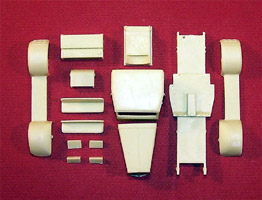
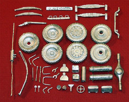
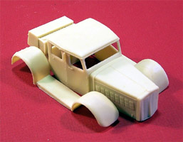
You may click on the above images to view larger pictures
Decals and Instructions
This kit does not include any decals. There is a single Hanomag logo printed on the instruction sheet that could either be cut out and placed on the model or maybe better, scan it and produce a waterslide decal.
The instructions consist of a single, full sized sheet of paper printed both front and back. It briefly covers the developmental background of the vehicle, includes some basic directions for working with resin and white metal parts and includes a full parts list. There are two sets of line drawings of the vehicle covering left side, right side, top, front and rear views. There are three exploded view construction steps that cover all the parts included in the model. The instructions are definitely adequate to help you achieve a finished product.
Conclusions
One thing that is sorely missing from this kit are clear parts. The modeler must fabricate all windows and no material is provided for this. The parts do fit together very well and the instructions are clear and helpful. Some additional scratch building could be done by adding a gearshift and hand brake inside as well as brake lines under the chassis. Even without these extra bits and pieces the kit builds into an impressive vehicle that will make an unusual addition to any Luftwaffe diorama.
Construction
I spent my first modeling session with this just cleaning up all the parts and opening up the windows. The fender pieces got a hot water treatment and were bent back into the correct shape then reset with cold water. All pieces got washed with warm soapy water to remove mold release residues and any particles from the clean-up process.
The interior cab areas were painted with RLM-02, the seats were done with Khaki. I built a gearshift lever and hand brake from fine magnet wire. The knob on the shifter is simply a drop of super-glue painted white. I plan on placing this in a diorama and needed a driver � out comes the Preiser box of Luftwaffe figures and pieces were modified to give me a driver with both hands on the wheel. The basic undercarriage pieces were assembled and the chassis got a coat of primer.
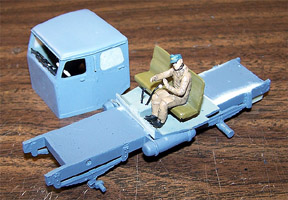
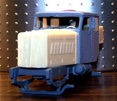
You may click on the above images to view larger pictures.
Next I need to deal with the lack of window material. A few years ago my wife had purchased a watchband and I had saved the clear plastic card that it came in with the thought that it might be useful sometime. Well guess what, I was right! I cut a section from that and dipped it in Future and set it aside to cure. I placed a piece of masking tape over each window opening and carefully cut it out then used that tape piece as my template to cut the windows. Using a flat diamond needle file each panel was fit to its opening. The driver�s side window was not installed, as it would be in a half open position upon completion.
Once all the windows had been fit they were glued in place with Testors Clear Parts cement and the cab was then secured with gap filling super-glue. Things really moved along quickly from here, the front hood was attached and the rear deck went on. The spare tire was placed temporarily so the rear tank and toolbox could be properly positioned. All the little accessories were glued in place like the headlamps, mirrors, tow hooks and other odd pieces. The driver�s window was stuffed with dampened tissue paper and she was ready for the paint room.
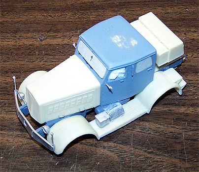 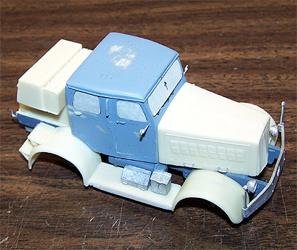
The model was primed with my standard mix of Model Master Primer Gray and 25% lacquer thinner. While this cured I worked on the wheels; they were painted with my own mix of tire black and the hubs were done with Polly Scale Panzer Dark Gray.
After the primer had a day to cure and the model was inspected for defects it got two coats of Panzer Dark Gray. I mixed a very light gray for the winter camouflage and applied it at low pressure. I came back with the Panzer Dark Gray to touch up some over-spray spots and she headed back to the worktable.
All the wheels were put on next. At this point all construction other than the driver�s side window is done and we are ready for weathering. First a good layer of Future floor polish is applied then I begin with a wash of Van Dyke brown and black ink. This is cleaned up a little and then I dry brush layers of steel, dark earth and light earth. A few decals are scrounged from the spares box and placed. Once all this tuff has dried the model gets a coat of Polly Scale clear flat to seal everything.
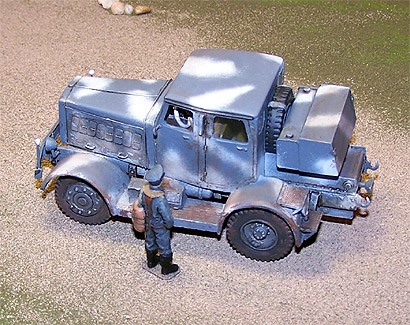 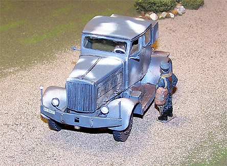
After removing the masks from the windows the remaining clear panel for the driver�s window was cut in half then attached with a spot of superglue. The windshield wiper arms and blades were fashioned from fine magnet wire and super-glue. They were attached with a dab of Testors Clear Parts cement.
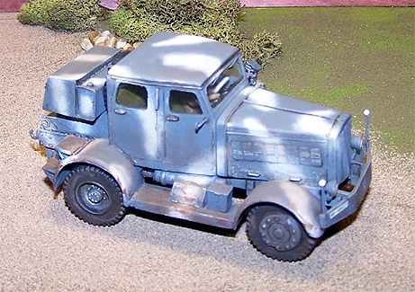 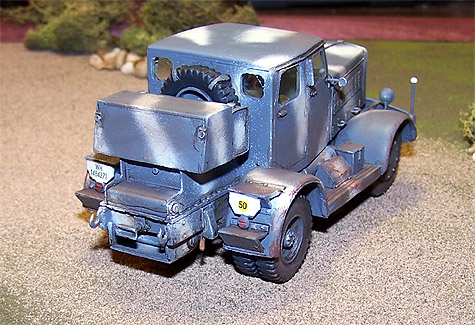
This was a fun little kit to build. This does require some advanced modeling skill and the ability to work with dissimilar materials. I think I had about a week and a half of modeling time invested in it and have an unusual piece to add to my Luftwaffe dioramas.